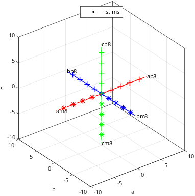
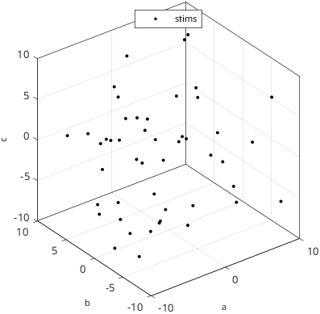
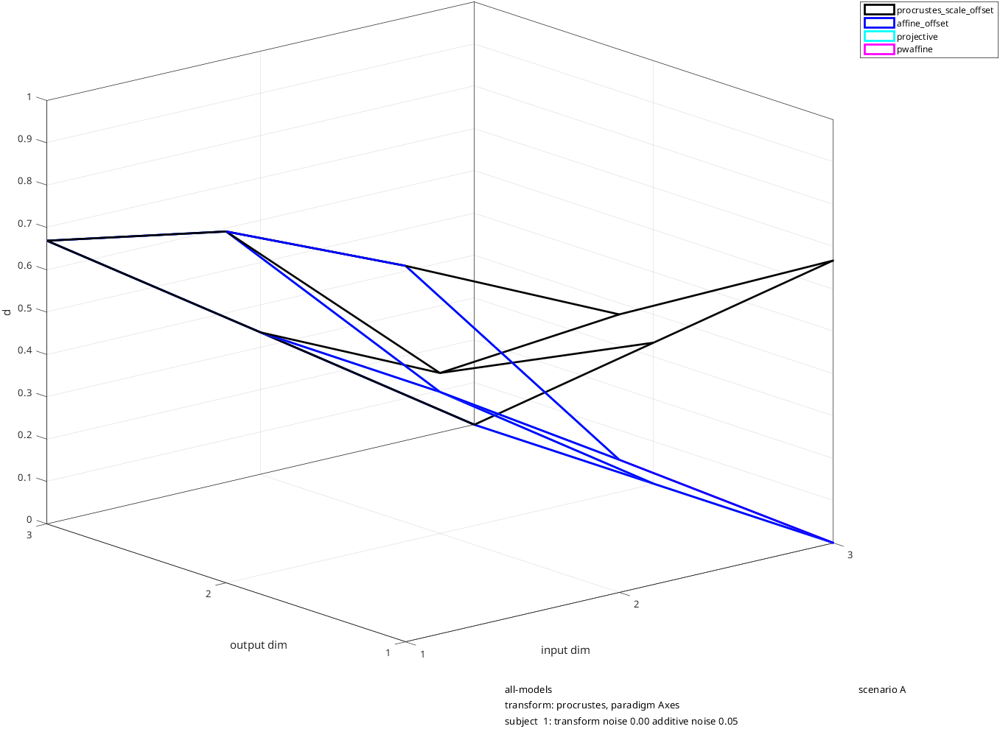
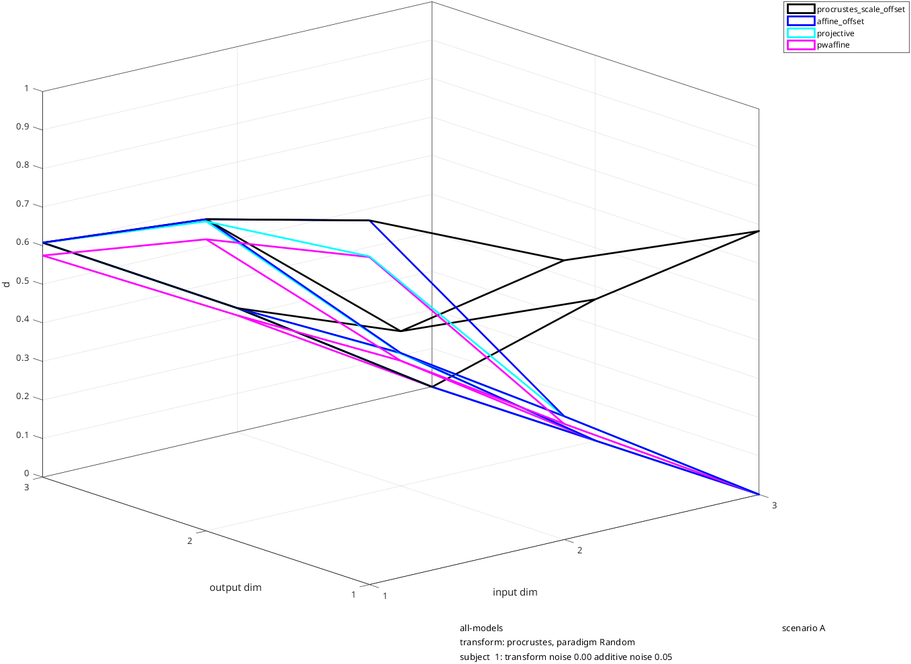
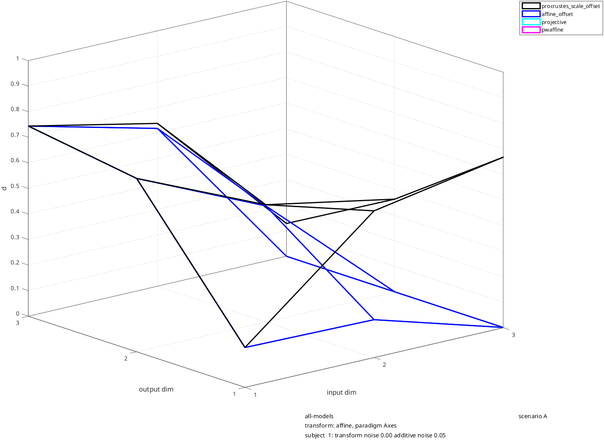
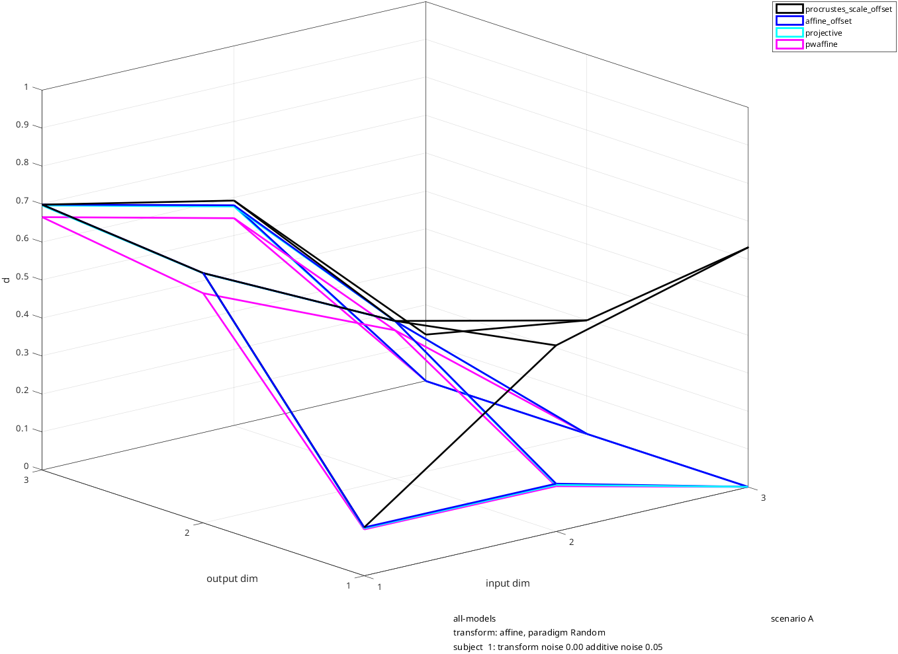
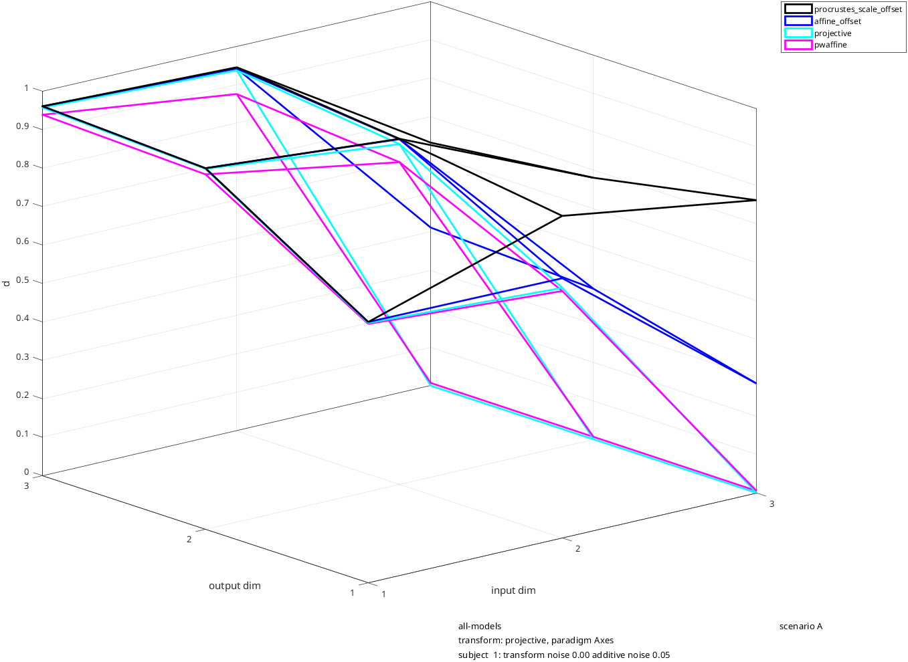
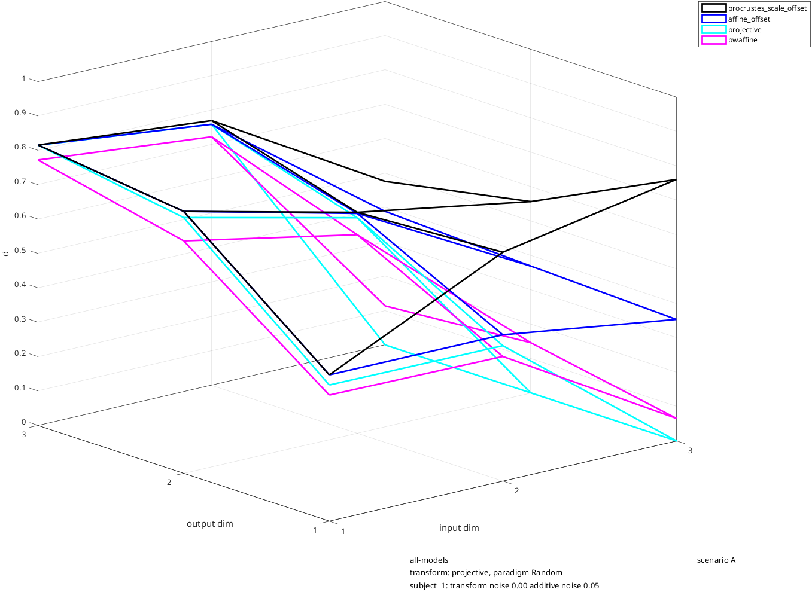
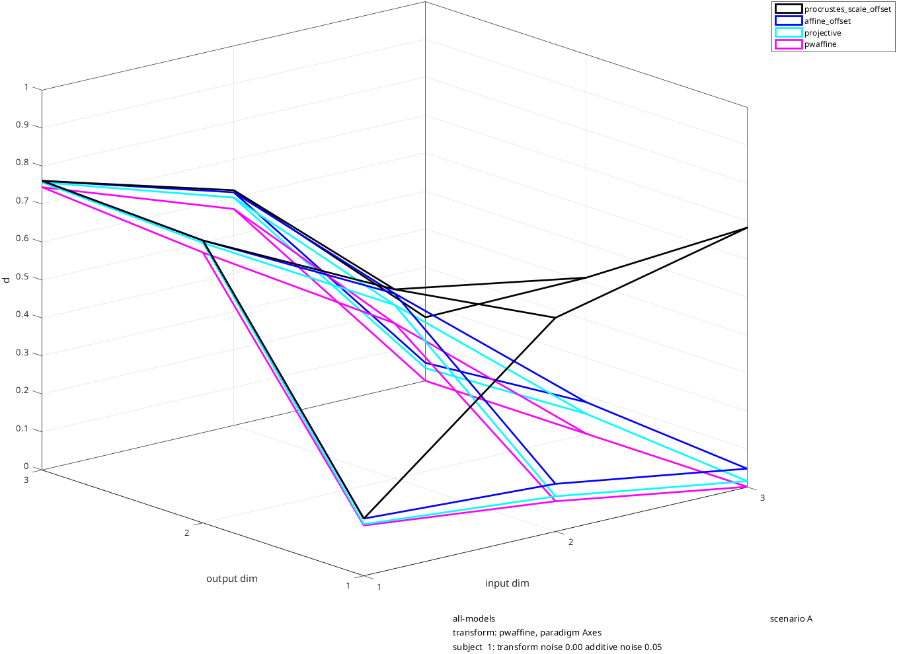
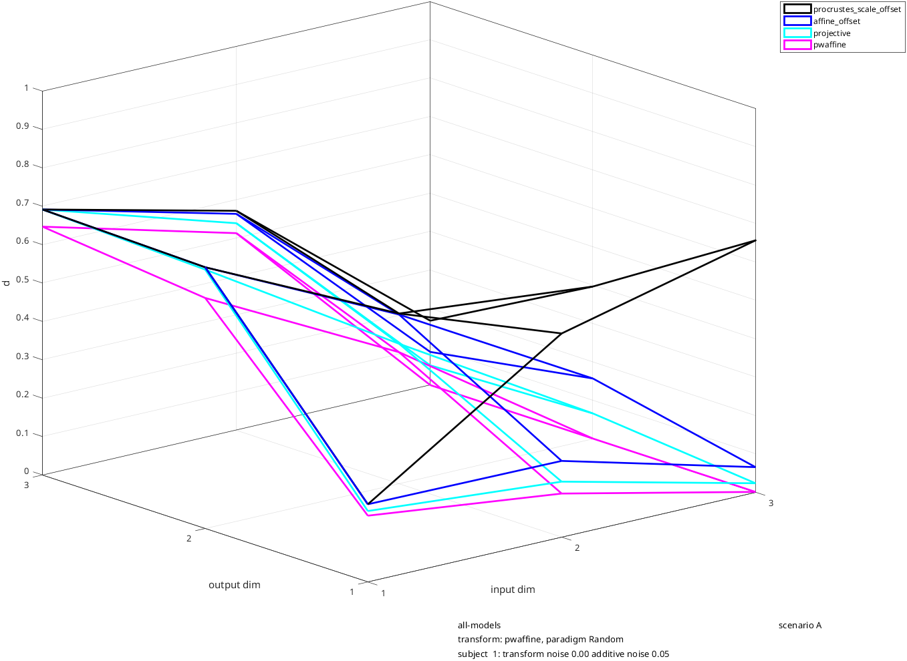

rs_toygeom_scenarioA
Geometric transformations, without statistics: procrustes, affine, projective, piecewise affine
Scenario A for rs_toygeom_sim:
general illustration of geometric models, without statistics
Geometric models simulated: procrustes, affine, projective, and piecewise affine (3 dimensions each)
Shows that:
* geometric models can be distinguished
* procurstes is also fit by affine, projective, and piecewise affine
* affine is also fit by projective and piecewise affine
* projective and piecewise affine can be distinguished, but not as readily
clear; scenario_name='scenario A';
transform selection
transform_names={'procrustes','affine','projective','pwaffine'};
projective_mag=0.07;
affine_mag=0.3;
paradigm customizations
paradigm_names={'Axes','Random'};
nrandom=48;
subject customizations
nsubjs=1;
ncoords_noise=0;
noise_transform_mag=0;
noise_add_subj=0.05;
geometric model selection
model_list={'procrustes_scale_offset','affine_offset','projective','pwaffine'};
opts_geof=struct;
opts_geof.if_stats=0;
create the stimuli and datasets, and fit the models (rs_toygeom_sim)
rs_toygeom_sim: geometric modeling with toy simulated datasets; used by rs_toygeom_scenario*
This illustrates fitting of geometric models via creation of simulated coordinate set structures.
It is intended that several of the parameters, especially paradigm_names, transform_names, are edited,
or that rs_toygeom_scenario*.m is run first; running as is will be very time-consuming.
Any of the parameters may be set in the workspace before running, in which case the default
is not applied; that is what rs_toygeom_scenario*.m does. So run this from a clear workspace
unless you intend to supply parameters yourself.
Constructs several transformations, designated by the strings in transform_names:
null: the identity
procrustes: rotation, no offset, inversion forced
affine: affine (linear) transformation, no offset
projective: projective transformation
pwaffine: piecewise affine transformation with one cutplane
Creates several stimulus sets in a space of ncoords dimensions, designated by the strings in paradigm_names
Axes: points in positive and negative directions along each of the axes
Rings_C12, Rings_C13, Rings_C23: concentric rings in planes (1,2), (1,3), and (2,3)
Random: random points that avoid the axes
RandomAndAxisEnds: random points and the endponts of Axes
These coordinate set structures imported into sims.(paradigm_name).stimspace, using rs_import_coordsets, and
are displayed with rs_disp_coordsets or rs_disp_enh_coordsets.
Note that coordinate values are always integers, in range [-9:9]
Sets up nsubjs subjects. For each subject, the parameters of the above transformations are jittered and applied to stimspace using rs_xform_apply,
noise is added, and, optionally, extra dimensions (ncoords_noise) with just noise are added. These are in sims.(paradigm_name).dataspace.(transform_name).
and are displayed with rs_disp_coordsets or rs_disp_enh_coordsets.
Optionally knits together the stimuli across pardigms, creating the
coordinate set structure sims.knitted.stimspace, and, for each subject, sims.knitted.dataspace.(transform_name)
The transformation from stimspace to dataspace are then fitted with geometric models with rs_geofit.
The model list defaults to {procrustes_noscale_offset','procrustes_scale_offset','affine_offset','projective'})
but can modified by changing model_list
Results of the fitting are displayed with rs_toygeom_disp, which invokes rs_disp_geofit.
This script has no documentation page of its own: each rs_toygeom_scenario* page shows it
where the scenario runs it.
See also: rs_import_coordsets, rs_disp_coordsets, rs_disp_geofit
rs_disp_enh_coordsets, rs_xform_apply, RS_CONCAT_DATASETS, rs_extract_coordsets, rs_toygeom_disp.
these are the main simulation parameters that may be edited, or have values set before running
if ~exist('transform_names') transform_names={'null','procrustes','affine','projective','pwaffine'}; end if ~exist('affine_mag') affine_mag=0.5; end if ~exist('projective_mag') projective_mag=0.1; end if ~exist('pwaffine_mag') pwaffine_mag=0.25; end
if ~exist('paradigm_names') paradigm_names={'Axes','Rings_C12','Rings_C13','Rings_C23','Random','RandomAndAxisEnds'}; end if ~exist('axis_samples') axis_samples=[2 4 6 8]; end if ~exist('ring_radii') ring_radii=[4 6 8]; end if ~exist('ring_angles') ring_angles=8; end if ~exist('nrandom') nrandom=16; end
if ~exist('nsubjs') nsubjs=1; end if ~exist('subjs_disp') subjs_disp=unique([1,nsubjs]); end
if ~exist('ncoords') ncoords=3; end if ~exist('ncoords_noise') ncoords_noise=2; end if ~exist('noise_transform_mag') noise_transform_mag=0; end if ~exist('noise_transform_subj') noise_transform_subj=[1:nsubjs]; end if ~exist('noise_add_mag') noise_add_mag=1; end if ~exist('noise_add_subj') noise_add_subj=[1:nsubjs]; end
if ~exist('if_disp_coordsets') if_disp_coordsets=1; end if ~exist('if_frozen') if_frozen=1; end
if ~exist('if_knit') if_knit=0; end
if ~exist('model_list') model_list={'procrustes_noscale_offset','procrustes_scale_offset','affine_offset','projective'}; end
if (if_frozen~=0)
rng('default');
if (if_frozen<0)
rand(1,abs(if_frozen));
end
else
rng('shuffle');
end
define the coordinates
ncoords=max(3,ncoords);
coord_labels=cell(1,ncoords);
for ic=1:ncoords
coord_labels{ic}=char('a'+ic-1);
end
ncoords_tot=ncoords+ncoords_noise;
define the paradigm (stimulus choices within each paradigm)
define the simulations: several transformations of the stimulus space, of dimension ncoords
transform_names_avail={'null','procrustes','affine','projective','pwaffine'};
ntransforms=length(transform_names);
transform_class_table=struct;
transform_class_table.null='affine';
transform_class_table.procrustes='affine';
transform_class_table.affine='affine';
transform_class_table.projective='projective';
transform_class_table.pwaffine='pwaffine';
for it=1:ntransforms
transform_classes{it}=transform_class_table.(transform_names{it});
end
null transformation
transforms.null.T=eye(ncoords);
transforms.null.b=1;
transforms.null.c=zeros(1,ncoords);
transforms.procrustes.T=eye(ncoords);
transforms.procrustes.T(1,1)=-1; for ic=1:ncoords-1
for jc=ic+1:ncoords
ang=2*pi*rand(1);
rot=zeros(ncoords);
rot([ic jc],[ic jc])=[cos(ang) sin(ang);-sin(ang) cos(ang)];
roteye=setdiff(1:ncoords,[ic jc]);
rot(roteye,roteye)=eye(ncoords-2);
transforms.procrustes.T=transforms.procrustes.T*rot;
end
end
transforms.procrustes.b=1;
transforms.procrustes.c=zeros(1,ncoords);
T=(1-affine_mag)*eye(ncoords)+affine_mag*randn(ncoords,ncoords); transforms.affine.T=T/sqrt(max(eig(T'*T))); transforms.affine.b=1;
transforms.affine.c=affine_mag*randn(1,ncoords);
transforms.projective=transforms.affine;
transforms.projective.p=projective_mag*randn(ncoords,1);
transforms.pwaffine=transforms.affine;
construct by adding a linear transformation to a rectification
params needed to ensure continuity across boundary
pw_vcut=randn(1,ncoords);
pw_vcut=pw_vcut./sqrt(pw_vcut*pw_vcut'); pw_acut=randn(1); pw_h=randn(1,ncoords);
the cutplane is x*pw_cut'=pw_acut.
Tcut=pw_vcut'*pw_h; transforms.pwaffine.T=repmat((1-pwaffine_mag)*transforms.affine.T,[1 1 2])+pwaffine_mag*cat(3,Tcut,-Tcut);
transforms.pwaffine.c_off=randn(1,ncoords);
transforms.pwaffine.c=pwaffine_mag*pw_acut*[-pw_h;pw_h]+repmat(transforms.pwaffine.c_off,2,1);
transforms.pwaffine.b=1;
transforms.pwaffine.acut=pw_acut;
transforms.pwaffine.vcut=pw_vcut;
transforms.pwaffine.h=pw_h;
disp(sprintf(' %2.0f transforms set up, on %3.0f coordinates.',ntransforms,ncoords));
Output:
4 transforms set up, on 3 coordinates.
define the number of subjects and levels of noise for each
noise_transform_base=noise_transform_mag*noise_transform_subj; noise_transform=noise_transform_base(1+mod([0:nsubjs-1],length(noise_transform_base))); noise_add_base=noise_add_mag*noise_add_subj; noise_add=noise_add_base(1+mod([0:nsubjs-1],length(noise_add_base)));
create the transformations for each subject by corrupting the parameters of the basic transforms by noise
note that all transforms are treatd, even if they won't be used, since some transforms are dependent on others
transforms_noisy=cell(1,nsubjs);
for it=1:length(transform_names_avail)
transform_name=transform_names_avail{it};
transform=transforms.(transform_name);
fns=fieldnames(transform);
for is=1:nsubjs
for ifn=1:length(fns)
if strcmp(fns{ifn},'p')
noise_param_mult=projective_mag;
else
noise_param_mult=1;
end
transforms_noisy{is}.(transform_name).(fns{ifn})=transform.(fns{ifn})+noise_param_mult*noise_transform(is)*randn(size(transform.(fns{ifn})));
end transforms_noisy{is}.(transform_name).b=1;
adjustment for procrustes to ensure that the transform is isotropic
if strcmp(transform_name,'procrustes')
[Torth,Torthonormal]=grmscmdt(transforms_noisy{is}.procrustes.T);
transforms_noisy{is}.procrustes.T=Torthonormal;
end
adjustments for pwaffine to ensure continuity at boundary
if strcmp(transform_name,'pwaffine')
pw_vcut=transforms_noisy{is}.pwaffine.vcut;
pw_acut=transforms_noisy{is}.pwaffine.acut;
pw_h=transforms_noisy{is}.pwaffine.h;
pw_vcut=pw_vcut./sqrt(pw_vcut*pw_vcut'); Tcut=pw_vcut'*pw_h; transforms_noisy{is}.pwaffine.T=repmat((1-pwaffine_mag)*transforms_noisy{is}.affine.T,[1 1 2])+pwaffine_mag*cat(3,Tcut,-Tcut);
transforms_noisy{is}.pwaffine.c=pwaffine_mag*pw_acut*[-pw_h;pw_h]+repmat(transforms_noisy{is}.pwaffine.c_off,2,1);
transforms_noisy{is}.pwaffine.vcut=pw_vcut;
end end end disp(sprintf('jittered transformations created for %2.0f subjects',nsubjs));
Output:
jittered transformations created for 1 subjects
define the coordinates of the stimulus sets
nparadigms=length(paradigm_names);
sims=struct;
sign_chars={'m','z','p'}; for ip=1:length(paradigm_names)
paradigm_name=paradigm_names{ip};
sim=struct;
switch paradigm_name
case 'Axes'
sim.nstims=2*ncoords*length(axis_samples)+1; sim.type_coords=zeros(sim.nstims,ncoords);
coord_ptr=0;
for ic=1:ncoords
for isamp=1:length(axis_samples)
for isign=-1:2:1
coord_ptr=coord_ptr+1;
sim.type_coords(coord_ptr,ic)=isign*axis_samples(isamp);
end
end
end
sim.if_findrays=1;
sim.if_rings=0;
case {'Rings_C12','Rings_C13','Rings_C23'}
sim.nstims=length(ring_radii)*ring_angles+1; sim.type_coords=zeros(sim.nstims,ncoords);
coord_ptr=0;
if contains(paradigm_name,'C12')
ring_plane=[1 2];
elseif contains(paradigm_name,'C13')
ring_plane=[1 3];
else
ring_plane=[2 3];
end
angs=2*pi*[0:ring_angles-1]'/ring_angles;
for ir=1:length(ring_radii)
ring_locs=ring_radii(ir)*[cos(angs) sin(angs)];
sim.type_coords(coord_ptr+[1:ring_angles],ring_plane)=ring_locs;
coord_ptr=coord_ptr+ring_angles;
end
sim.if_findrays=1;
sim.if_rings=1;
case {'Random','RandomAndAxisEnds'}
if strcmp(paradigm_name,'RandomAndAxisEnds')
if_axend=1;
else
if_axend=0;
end
sim.nstims=nrandom+if_axend*(2*ncoords+nrandom+1); sim.type_coords=zeros(sim.nstims,ncoords);
random_vals=[[-random_max:-1] [1:random_max]]; rand_samps=ceil(2*random_max*rand(nrandom,ncoords));
sim.type_coords(1:nrandom,:)=random_vals(rand_samps);
if if_axend
make the samples at the ends of the axes
coord_ptr=nrandom;
for ic=1:ncoords
for isign=-1:2:1
coord_ptr=coord_ptr+1;
sim.type_coords(coord_ptr,ic)=isign*axis_samples(end);
end
end
end
sim.if_findrays=0;
sim.if_rings=0;
otherwise
rs_warning('unrecognized paradigm name',1);
end
sims.(paradigm_name)=sim;
disp(sprintf('coordinate sets created for paradigm %s',paradigm_name));
end
Output:
coordinate sets created for paradigm Axes
coordinate sets created for paradigm Random
create the type names, e.g., conceptual coordinate [-3 0 4] -> 'am3 cp4'
and create a simulated dataset in which data coordinates are equal to
conceptual coordinates
ray_opts=struct;
ray_opts.ray_minpts=length(ring_radii);
for ip=1:length(paradigm_names)
paradigm_name=paradigm_names{ip};
sim=sims.(paradigm_name);
typenames=cell(sim.nstims,1);
for istim=1:sim.nstims
tn=' ';
for ic=1:ncoords
cval=sim.type_coords(istim,ic);
if abs(cval)>0.5 tn=cat(2,tn,coord_labels{ic},sign_chars{2+sign(cval)},sprintf('%1.0f',round(abs(cval))),' ');
end
end
typenames{istim}=strtrim(tn);
end
sims.(paradigm_name).typenames=typenames;
aux_stimspace=struct;
aux_stimspace.opts_import.nstims=sim.nstims;
aux_stimspace.opts_import.typenames=typenames;
aux_stimspace.opts_import.type_coords=sim.type_coords;
aux_stimspace.opts_import.paradigm_type=paradigm_type;
aux_stimspace.opts_import.paradigm_name=paradigm_name;
aux_stimspace.opts_import.subj_id='stimspace';
aux_stimspace.opts_import.subj_id_short='stims';
aux_stimspace.opts_import.label_long='conceptual coordinates';
import_coords=cell(1,ncoords);
for ic=1:ncoords
import_coords{ic}=sim.type_coords(:,1:ic);
end
[sim.stimspace,sim.stimspace_import_auxout]=rs_import_coordsets(import_coords,aux_stimspace);
if sim.if_findrays
[sim.stimspace_rays,wmsg,sim.stimspace_findrays_auxout]=rs_findrays(sim.stimspace.sas{1},[],ray_opts);
disp(sprintf('ray structure created for paradigm %s',paradigm_name));
else
sim.stimspace_rays=struct();
disp(sprintf('ray structure skipped for paradigm %s',paradigm_name));
end
sims.(paradigm_name)=sim;
end
Output:
ray structure created for paradigm Axes
ray structure skipped for paradigm Random
set up a page for each paradigm, with space for multiple subplots,
and plot the conceptual coordinates
fig_rows=length(subjs_disp)+1; fig_cols=ntransforms;
aux_stimdisp=struct;
for ip=1:length(paradigm_names)
paradigm_name=paradigm_names{ip};
sim=sims.(paradigm_name);
if if_disp_coordsets figure;
set(gcf,'Position',[100 100 1400 800]);
set(gcf,'NumberTitle','off');
set(gcf,'Name',paradigm_name);
aux_stimdisp.opts_disp.fig_handle=gcf;
aux_stimdisp.opts_disp.fig_name=paradigm_name;
aux_stimdisp.opts_disp.axis_range='list';
aux_stimdisp.opts_disp.axis_range_list=[-1 1]*(1+random_max);
aux_stimdisp.opts_disp.callout_amount=0.3;
aux_stimdisp.opts_disp.axis_labels=coord_labels;
aux_stimdisp.opts_disp.legend_location='North';
aux_stimdisp.opts_disp.set_labels='stims';
aux_stimdisp.opts_disp.axis_handles={subplot(fig_rows,1,1)};
if sim.if_findrays
aux_stimdisp.opts_disp_enh.if_rings=sim.if_rings;
aux_stimdisp.opts_disp_enh.if_points=1; aux_stimdisp.opts_disp.data_show_method='last'; sim.stimspace_disp_auxout=rs_disp_enh_coordsets(sim.stimspace,aux_stimdisp,sim.stimspace_rays);
else
aux_stimdisp.opts_disp.data_show_method='all';
aux_stimdisp.opts_disp.data_label_method='list';
aux_stimdisp.opts_disp.data_label_list=find(~contains(sim.stimspace.sas{1}.typenames,' ')); sim.stimspace_disp_auxout=rs_disp_coordsets(sim.stimspace,aux_stimdisp);
end
drawnow;
end
sims.(paradigm_name)=sim;
end


apply each subject's transform to the stimuli in each stimulus set, and display
for ip=1:length(paradigm_names)
paradigm_name=paradigm_names{ip};
sim=sims.(paradigm_name);
for it=1:ntransforms
transform_name=transform_names{it};
xform_subj=cell(1,nsubjs);
for is=1:nsubjs
xforms=struct;
xforms.ts{1}{ncoords}=transforms_noisy{is}.(transform_name);
opts_xform=struct;
opts_xform.class=transform_classes{it};
xform_subj{is}=rs_xform_apply(sim.stimspace,xforms,setfield(struct,'opts_xform',opts_xform));
fill in lower and higher dimensions and add noise
for ic=1:ncoords_tot
xform_subj{is}.ds{1}{ic}=noise_add(is)*randn(sim.nstims,ic)+...
[xform_subj{is}.ds{1}{ncoords}(:,1:min(ic,ncoords)),zeros(sim.nstims,max(0,ic-ncoords))];
end
sets=xform_subj{is}.sets{1};
sets.dim_list=[1:ncoords_tot]; sets.subj_id=sprintf('%s%s','subject ',zpad(is,2));
sets.subj_id_short=sprintf('%s%s','s',zpad(is,2));
sets.label_long=sprintf('simulation: %s',transform_names{it});
sets.label=transform_names{it};
xform_subj{is}.sets{1}=sets;
end
concatenate datasets aross subjects
dataspace=xform_subj{1};
for is=2:nsubjs
dataspace=rs_concat_coordsets(dataspace,xform_subj{is});
end
sim.dataspace.(transform_name)=dataspace;
aux_datadisp=struct;
if if_disp_coordsets
for is_ptr=1:length(subjs_disp)
is=subjs_disp(is_ptr);
aux_datadisp.opts_disp=sim.stimspace_disp_auxout.opts_disp;
aux_datadisp.opts_disp.axis_handles={subplot(fig_rows,fig_cols,it)}; %show each transform in a separate column
aux_datadisp.opts_disp=rmfield(aux_datadisp.opts_disp,'axis_labels'); aux_datadisp.opts_disp.set_labels=sprintf('subj %1.0f %s',is,transform_name);
aux_datadisp.opts_disp.set_select=is; aux_datadisp.opts_disp.set_colors={'k'};
figure(aux_datadisp.opts_disp.fig_handle); aux_datadisp.opts_disp.axis_handles={subplot(fig_rows,fig_cols,it+is_ptr*fig_cols)};
if sim.if_findrays aux_datadisp.opts_disp_enh=sim.stimspace_disp_auxout.opts_disp_enh; sim.dataspace_disp_auxout.(transform_name){is}=rs_disp_enh_coordsets(dataspace,aux_datadisp,sim.stimspace_rays);
else
sim.dataspace_disp_auxout.(transform_name){is}=rs_disp_coordsets(dataspace,aux_datadisp);
end
drawnow;
end end
disp(sprintf('dataspace created for paradigm %20s and transform %s',paradigm_name,transform_name));
end sims.(paradigm_name)=sim;
end
Output:
dataspace created for paradigm Axes and transform procrustes
dataspace created for paradigm Axes and transform affine
dataspace created for paradigm Axes and transform projective
dataspace created for paradigm Axes and transform pwaffine
dataspace created for paradigm Random and transform procrustes
dataspace created for paradigm Random and transform affine
dataspace created for paradigm Random and transform projective
dataspace created for paradigm Random and transform pwaffine
optinally align and knit the stimuli across paradigms
if if_knit
check_nowarn=setfield(struct,'opts_check',setfield(struct,'if_warn',0));
sims.knitted=struct;
aux_align=struct;
aux_align.opts_align.if_log=0;
aux_knit=struct;
aux_knit.opts_knit.if_log=0;
disp(' ');
for ip=1:length(paradigm_names)
paradigm_name=paradigm_names{ip};
stim_data=sims.(paradigm_name).stimspace;
if ip==1
concat=stim_data;
else
concat=rs_concat_coordsets(concat,stim_data,check_nowarn);
end
end
disp('aligning stimuli across paradigms');
aligned=rs_align_coordsets(concat,aux_align);
disp('knitting data across paradigms');
knitted=rs_knit_coordsets(aligned,aux_knit);
sims.knitted.stimspace=knitted;
for each transformation and subject, align and knit the data across paradigms
sims.knitted.dataspace=struct();
for it=1:ntransforms
transform_name=transform_names{it};
concat_knitted=struct;
for is=1:nsubjs
concat=struct;
for ip=1:length(paradigm_names)
paradigm_name=paradigm_names{ip};
subj_data=rs_extract_coordsets(sims.(paradigm_name).dataspace.(transform_name),is); if ip==1
concat=subj_data;
else
concat=rs_concat_coordsets(concat,subj_data,check_nowarn);
end
end
disp(' ');
disp(sprintf('aligning data from subject %1.0f, transform %s, across paradigms',is,transform_name))
aligned=rs_align_coordsets(concat,aux_align);
disp(sprintf('knitting data from subject %1.0f, transform %s, into a single dataset',is,transform_name))
knitted=rs_knit_coordsets(aligned,aux_knit);
if is==1
concat_knitted=knitted;
else
concat_knitted=rs_concat_coordsets(concat_knitted,knitted);
end
end
sims.knitted.dataspace.(transform_name)=concat_knitted;
end
end
fit models to transformation between stimulus space and data space
paradigms_all=fieldnames(sims); if ~exist('opts_geof') opts_geof=struct; end
opts_geof=filldefault(opts_geof,'model_list',model_list);
opts_geof=filldefault(opts_geof,'dimpairs_method','all');
opts_geof=filldefault(opts_geof,'if_stats',1);
opts_geof=filldefault(opts_geof,'nshuffs',20);
opts_geof=filldefault(opts_geof,'if_nestbymodel',-1);
opts_geof=filldefault(opts_geof,'if_nestbydim',-1);
opts_geof=filldefault(opts_geof,'if_log',0);
opts_geof=filldefault(opts_geof,'if_fit_summary',0);
aux_geof=struct;
aux_geof.opts_geof=opts_geof;
gfs=cell(ntransforms,length(paradigms_all));
xs=cell(ntransforms,length(paradigms_all));
aux_geof_out=cell(ntransforms,length(paradigms_all));
for it=1:ntransforms
transform_name=transform_names{it};
disp(' ');
for ip=1:length(paradigms_all)
paradigm_name=paradigms_all{ip};
disp(sprintf('modeling transform %20s from stimulus space to subject space with paradigm %20s',transform_name,paradigm_name));
data_in=sims.(paradigm_name).stimspace;
data_out=sims.(paradigm_name).dataspace.(transform_name);
[gfs{it,ip},xs{it,ip},aux_geof_out{it,ip}]=rs_geofit(data_in,data_out,aux_geof);
end
end
sims.transform_names=transform_names;
sims.paradigm_names=paradigm_names;
sims.paradigms_all=paradigms_all;
sims.nsubjs=nsubjs;
sims.gfs=gfs;
sims.xs=xs;
sims.aux_geof_out=aux_geof_out;
Output:
modeling transform procrustes from stimulus space to subject space with paradigm Axes
modeling transform procrustes from stimulus space to subject space with paradigm Random
modeling transform affine from stimulus space to subject space with paradigm Axes
modeling transform affine from stimulus space to subject space with paradigm Random
modeling transform projective from stimulus space to subject space with paradigm Axes
modeling transform projective from stimulus space to subject space with paradigm Random
modeling transform pwaffine from stimulus space to subject space with paradigm Axes
modeling transform pwaffine from stimulus space to subject space with paradigm Random
sims.ncoords=ncoords;
sims.ncoords_noise=ncoords_noise;
sims.noise_transform_mag=noise_transform_mag;
sims.noise_transform_subj=noise_transform_subj;
sims.noise_transform=noise_transform;
sims.noise_add_mag=noise_add_mag;
sims.noise_add_subj=noise_add_subj;
sims.noise_add=noise_add;
sims.model_list=model_list;
disp('consider saving the structure ''sims'', and using rs_toygeom_disp to display results')
Output:
consider saving the structure 'sims', and using rs_toygeom_disp to display results
End of included script rs_toygeom_sim.
geometric model fit display customizations
paradigms_fit_show={'Axes','Random'};
subjs_fit_show=[1:nsubjs];
opts_dgeo=struct;
opts_dgeo.view=[-40 20];
display model-fitting results (rs_toygeom_disp)
rs_toygeom_disp: display the results of rs_toygeom_sim with `rs_disp_geofit`
sims: a structure containing simulations, geometric model fits, and key parameters
'sims' must already be in the workspace, created by rs_toygeom_sim, which the
rs_toygeom_scenario* scripts run first. Display options (opts_dgeo, transforms_fit_show,
paradigms_fit_show, subjs_fit_show) are read from the workspace when they are defined.
This script has no documentation page of its own: each rs_toygeom_scenario* page shows it
where the scenario runs it.
See also: rs_toygeom_sim, rs_disp_geofit
if ~exist('sims')
error('no sims structure found: run one of the rs_toygeom_scenario* scripts, or rs_toygeom_sim, first');
end
if ~exist('opts_dgeo') opts_dgeo=struct; end
aux_dgeo=struct;
aux_dgeo.opts_dgeo=opts_dgeo;
if ~exist('transforms_fit_show') transforms_fit_show=sims.transform_names; end
if ~exist('paradigms_fit_show') paradigms_fit_show=sims.paradigms_all; end
if ~exist('subjs_fit_show') subjs_fit_show=[1:sims.nsubjs]; end
for it=1:length(sims.transform_names)
transform_name=sims.transform_names{it};
for ip=1:length(sims.paradigms_all)
paradigm_name=sims.paradigms_all{ip};
for is=1:sims.nsubjs
if ~isempty(strmatch(transform_name,transforms_fit_show,'exact')) & ~isempty(strmatch(paradigm_name,paradigms_fit_show,'exact')) & ismember(is,subjs_fit_show)
aux_dgeo_out=rs_disp_geofit(sims.gfs{it,ip}{is}.gf,aux_dgeo);
fig_handles=aux_dgeo_out.opts_dgeo.fig_handles;
fig_names=aux_dgeo_out.opts_dgeo.fig_names;
for ifig=1:length(fig_handles)
figure(fig_handles{ifig});
set(gcf,'Name',cat(2,fig_names{ifig},sprintf(' subj %1.0f',is),' ',transform_name,' ',paradigm_name));
if exist('scenario_name')
axes('Position',[0.80,0.05,0.01,0.01]); text(0,0,scenario_name,'Interpreter','none');
axis off;
end
axes('Position',[0.50,0.05,0.01,0.01]); text(0,0,fig_names{ifig},'Interpreter','none');
axis off;
axes('Position',[0.50,0.03,0.01,0.01]); text(0,0,sprintf('transform: %s, paradigm %s',transform_name,paradigm_name),'Interpreter','none');
axis off;
axes('Position',[0.50,0.01,0.01,0.01]);
text(0,0,sprintf('subject %2.0f: transform noise %4.2f additive noise %4.2f',is,sims.noise_transform(is),sims.noise_add(is)));
axis off;
end
end end end end








End of included script rs_toygeom_disp.